Smart Forms
Responsive Form Framework
- Created By: Elflaire
- Created On: 18/03/2014
- Updated On: 20/07/2014
- Email: hello@doptiq.com
Thank you for purchasing Smart Forms. If you have any questions that are beyond the scope of this help file, please feel free to email me via my Codecanyon public profile page contact form here. Thank you so much once again, lets get started...
Form Setup
Getting started
The forms use a single main CSS file which contains the general styling of all form elements as well as handling responsiveness through CSS3 Media Queries! In case you have any CSS resets such as Eric Mayers or Normalize in your website or web application, please make sure the form CSS files are loaded after / below the CSS file that contains your CSS reset rules to avoid any changes that may be caused by the reset, however this is still a rare case as the forms have their own reset rules :-). Additional optional stylesheets are used to style themes, we shall cover this in detail later on...
The forms do not depend on any images, fontawesome icons or javascript to fuction, they are entirely built using CSS3 and HTML5 therefore the fontawesome icons styleet and javacripts are all optional for those who need to use icons or javascript for purposes of ajax submition, form validation, masking or using the date-picker widget!
Internet Explorer Browser version 8 (IE8) has an additional fallback stylesheet for better enhancement and compartibility purposes, please note that this style is loaded via conditional comments, with an IF statement structure. For those who are using these forms to build your own custom forms, you will need additional Javascript files included via contitional comments, only for supporting placeholder attribute in old IE browsers IE9 and below, you can use any other placeholer plugins especially those that are not library dependent (ones that don't depend on libraries such as jQuery). If you don't need native placeholder support, just drop the contitional js files.
Folder Organization
When you open the SOURCE folder, you will find 3 folders (dark, elegant and flat), each of these folder represent a style, each style has its different themes. Furher inside each style folder are three folders again! ( ajax, javascript and templates ).
- Ajax and php - Includes working forms - which include a contact form, order form, order form with multiple uploads!
- Javascript enhancements - Includes samples on how you can add form validation, masking and calendar widgets
- Template samples folder - Includes html and css form templates that you can use or modify to build your forms faster
TIP: For purposes of being organized, create a folder on your desktop or anywhere, copy the css, js, images folders from your chosen / preferred theme and paste them to your created folder - Next choose a template from the list of templates copy it to your folder and start to modify it to fit your needs, later we shall discuss how you can add validation and even some PHP to make it a fully working form.
Basic Form Setup
In brief, your basic CSS and HTML should look like the codes below, before you start putting any form elements to the canvas, next we shall look at how to include some form elemnts:
<!DOCTYPE html>
<html lang="en">
<head>
<title> Smart Forms - Form Title </title>
<meta charset="utf-8">
<!-- Mobile viewport meta tag -->
<meta name="viewport" content="width=device-width, initial-scale=1.0">
<!-- Form styleshets -->
<link rel="stylesheet" type="text/css" href="css/smart-forms.css">
<link rel="stylesheet" type="text/css" href="css/font-awesome.min.css">
<!-- Placeholder support in IE9 and below -->
<!--[if lte IE 9]>
<script type="text/javascript" src="js/jquery-1.9.1.min.js"></script>
<script type="text/javascript" src="js/jquery.placeholder.min.js"></script>
<![endif]-->
<!-- IE8 Fallback styling -->
<!--[if lte IE 8]>
<link type="text/css" rel="stylesheet" href="css/smart-forms-ie8.css">
<![endif]-->
</head>
<body>
<!-- FORM CONTENT WILL GO HERE -->
</body>
</html>
HTML Structure
Load the relevant stylesheets and javascript in the head section
<head>
<title> Smart Forms - Form Title </title>
<meta charset="utf-8">
<!-- Mobile meta -->
<meta name="viewport" content="width=device-width, initial-scale=1.0">
<!-- Form styleshets -->
<link rel="stylesheet" type="text/css" href="css/smart-forms.css">
<link rel="stylesheet" type="text/css" href="css/font-awesome.min.css">
<!-- Placeholder support in IE9 and below -->
<!--[if lte IE 9]>
<script type="text/javascript" src="js/jquery-1.9.1.min.js"></script>
<script type="text/javascript" src="js/jquery.placeholder.min.js"></script>
<![endif]-->
<!-- IE8 Fallback styling -->
<!--[if lte IE 8]>
<link type="text/css" rel="stylesheet" href="css/smart-forms-ie8.css">
<![endif]-->
</head>
Setup all the necessary form sections in the body section
Inside the body section, wrap the form into two sections
- smart-wrap - added to control padding (prevents the form from filling the entire window on small devices by leaving some neat side space)
- smart-forms - Its a must section used to style the entire form, it has an extra class called wrap-3, this is used for controlling the form container width (i.e where the form sits), when you remove it the form fills the entire browser window, you will notice that you can change wrap-3 to wrap-0 upto wrap-4, you can even create your own wrapper and give it a max-width e.g in css add .wrap-7{ max-width: 1000px; }, then replace wrap-3 with your custom wrapper, the rest will take care of its self!
<body>
<div class="smart-wrap">
<div class="smart-forms wrap-3">
<!-- OUR MAIN FORM SECTIONS LOAD HERE - FORM HEADER | FORM BODY | FORM FOOTER -->
</div><!-- end .smart-forms section -->
</div><!-- end .smart-wrap section -->
</body>
The form body and form footer are inside the form tag, the form header section is above the form tag like below!
<body class="woodbg">
<div class="smart-wrap">
<div class="smart-forms wrap-3">
<!-- START FORM HEADER -->
<div class="form-header header-primary">
<h4><i class="fa fa-comments"></i>Get in touch</h4>
</div><!-- end .form-header section -->
<form method="post" action="/" id="contact">
<!-- START FORM BODY -->
<div class="form-body">
<!-- ALL FORM ELEMENTS WILL GO HERE -->
</div><!-- end .form-body section -->
<!-- START FORM FOOTER -->
<div class="form-footer">
<button type="submit" class="button btn-primary">Submit</button>
</div><!-- end .form-footer section -->
</form>
</div><!-- end .smart-forms section -->
</div><!-- end .smart-wrap section -->
</body>
Form elements markup
A simple contact form has markup that looks like below!
<div class="smart-wrap">
<div class="smart-forms wrap-3">
<div class="form-header header-primary">
<h4><i class="fa fa-comments"></i>Get in touch</h4>
</div><!-- end .form-header section -->
<form method="post" action="/" id="contact">
<div class="form-body">
<div class="section">
<label for="names" class="field-label">Your Personal Names</label>
<label for="names" class="field prepend-icon">
<input type="text" name="names" id="names" class="gui-input" placeholder="Enter name...">
<label for="names" class="field-icon"><i class="fa fa-user"></i></label>
</label>
</div><!-- end section -->
<div class="section">
<label for="email" class="field-label">Your Email Address</label>
<label for="email" class="field prepend-icon">
<input type="email" name="email" id="email" class="gui-input" placeholder="example@domain.com...">
<label for="email" class="field-icon"><i class="fa fa-envelope"></i></label>
</label>
</div><!-- end section -->
<div class="section">
<label for="telephone" class="field-label">Telephone / Mobile </label>
<label for="telephone" class="field prepend-icon">
<input type="tel" name="telephone" id="telephone" class="gui-input" placeholder="Enter telephone...">
<label for="telephone" class="field-icon"><i class="fa fa-phone-square"></i></label>
</label>
</div><!-- end section -->
<div class="section">
<label for="comment" class="field-label">Message / Comment </label>
<label for="comment" class="field prepend-icon">
<textarea class="gui-textarea" id="comment" name="comment"></textarea>
<label for="comment" class="field-icon"><i class="fa fa-comments"></i></label>
<span class="input-hint"> <strong>Hint:</strong> Please enter between 80 - 300 characters.</span>
</label>
</div><!-- end section -->
</div><!-- end .form-body section -->
<div class="form-footer">
<button type="submit" class="button btn-primary">Submit</button>
</div><!-- end .form-footer section -->
</form>
</div><!-- end .smart-forms section -->
</div><!-- end .smart-wrap section -->
Building forms
To build a form do the following
1. Put main form sections (FORM HEADER, FORM BODY and FORM FOOTER) markup into the BODY section of your HTML document like below
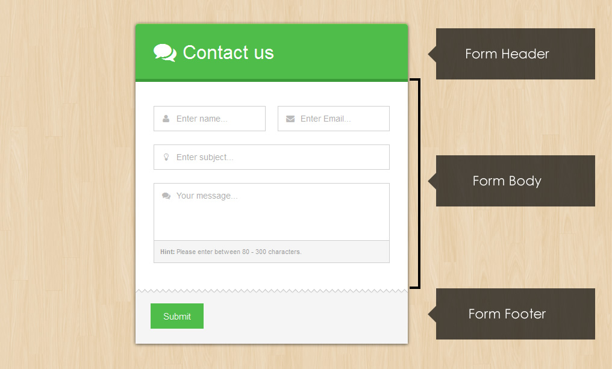
<div class="smart-wrap">
<div class="smart-forms wrap-3">
<div class="form-header header-primary">
<h4><i class="fa fa-comments"></i>Get in touch</h4>
</div><!-- end .form-header section -->
<form method="post" action="/" id="contact">
<div class="form-body">
<!-- OUR FORM ELEMENTS WILL GO HERE -->
</div><!-- end .form-body section -->
<div class="form-footer">
<button type="submit" class="button btn-primary">Submit</button>
</div><!-- end .form-footer section -->
</form>
</div><!-- end .smart-forms section -->
</div><!-- end .smart-wrap section -->
2. Include Form elements markup (inputs, selects, radios etc)
Input elements include all text input elements including the new HTML5 custom inputs, such as text, password, tel, search, email, url, the markup for inputs looks as follows.
Text input
Create an input type text, wrap it inside a label with a class field, thats it
<div class="section">
<label class="field">
<input type="text" class="gui-input" placeholder="Input no icon">
</label>
</div><!-- end section -->
Text inputs with icons
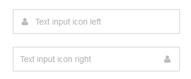Text input with icon left
<div class="section">
<label class="field prepend-icon">
<input type="text" name="firstname" id="firstname" class="gui-input" placeholder="Text input icon left">
<label for="firstname" class="field-icon"><i class="fa fa-user"></i></label>
</label>
</div><!-- end section -->
Text input with icon right
<div class="section">
<label class="field append-icon">
<input type="text" name="firstname" id="firstname" class="gui-input" placeholder="Text input icon left">
<label for="firstname" class="field-icon"><i class="fa fa-user"></i></label>
</label>
</div><!-- end section -->
Text inputs with icons, tooltips, labels
Place the tooltip markup immediately below the input, please note that tooltips can be in 6 directions, left, left-top, left-bottom, right, right-top, right-bottom. You choose whichever suits your design and style...
The markup above will create an input type text field below with a label above it, when you click on the label text, the input will be focused because the label for="names" is the same as the input id="names". The words Enter name...are put there with the help of the new HTML5 form placeholder attribute, please note that this attribute is only available in modern browsers, that is why we included the jQuery placeholder plugin to have it available in old Internet Explorer Browsers versions 9 and below.
<div class="section">
<label for="names" class="field-label">Icon left + tooltip left</label>
<label class="field prepend-icon">
<input type="text" name="names" id="names" class="gui-input" placeholder="Enter name...">
<b class="tooltip tip-left"><em> Hey buddy! iam a left tooltip. You notice me now huh?</em></b>
<label class="field-icon"><i class="fa fa-user"></i></label>
</label>
</div><!-- end section -->
Other Web Forms 2.0 input types
HTML5 is the newest specification for HTML, the language that web browsers read to display web pages. HTML5 has many new features intended to make creating websites easier and people's experience in using those websites better. Among those features are many enhancements to web forms.
New form features and input elements, these include the following
- color
- date
- datetime
- datetime-local
- month
- number
- range
- search
- tel
- time
- url
- week
More elemnts include
- meter
- progress
- output
- keygen
These are also accompanied by new form attributes to enhance the forms
- form
- readonly
- autocomplete
- autofocus
- list
- pattern
- required*
- placeholder
- multiple
- list
- min
- max
- step
- form action
- form enctype
- form method
- form target
- form novalidate
Smart forms focuses on some of those new shinny elements are styled directly such as:-
- search - Used on search forms
- url - Used on web addresses
- email - Used on email addresses
- password - Used for passwords
- tel - Used for phone numbers
More elements supported via jQuery plugins include:-
- color - Using the spectrum color picker
- date - Using the UI date picker
- datetime - Using the UI date / time picker addon
- time - Using the UI date / time picker addon
- month - Using the UI date / month picker addon
- number - Using the numeric stepper plugin
- range - Using the UI slider
To create another input but of a diffent type such as email, the markup will change a little bit, on the type="email" part and the for=" " for the label and id=" " to match the label, and even the placeholer=" " text will of course change to match your desired text!
Whats the difference, you may ask?
Well not so much for now especially on desktops, however when you view your forms on a modern smartphone like the iPhone, you will notice some differences for example when you tap / focus on the email input, the touch pad keys will somehow change to include some special email characters like the@ , when you tap an input such as number, the touch pad keys change to numeric, so that somehow makes a huge difference and Improves the user experience for those viewing your forms on smart phones / mobile devices and tablets.
Email Input
<div class="section">
<label class="field prepend-icon">
<input type="email" name="email" id="email" class="gui-input" placeholder="Email input">
<label for="email" class="field-icon"><i class="fa fa-envelope"></i></label>
</label>
</div><!-- end section -->
Telephone Input
<div class="section">
<label class="field prepend-icon">
<input type="tel" name="mobile" id="mobile" class="gui-input" placeholder="Telephone input">
<label for="mobile" class="field-icon"><i class="fa fa-phone-square"></i></label>
</label>
</div><!-- end section -->
Web URL Input
<div class="section">
<label class="field prepend-icon">
<input type="url" name="website" id="website" class="gui-input" placeholder="URL input">
<label for="website" class="field-icon"><i class="fa fa-globe"></i></label>
</label>
</div><!-- end section -->
Password Input
<div class="section">
<label class="field prepend-icon">
<input type="password" name="password" id="password" class="gui-input" placeholder="Password input">
<label for="password" class="field-icon"><i class="fa fa-lock"></i></label>
</label>
</div><!-- end section -->
Textarea
<div class="section">
<label class="field prepend-icon">
<textarea class="gui-textarea" id="comment" name="comment" placeholder="Text area"></textarea>
<label for="comment" class="field-icon"><i class="fa fa-comments"></i></label>
<span class="input-hint">
<strong>Hint:</strong> This is a hint below the textarea
</span>
</label>
</div><!-- end section -->
Drop select - with single arrow
<div class="section colm colm6">
<label class="field select">
<select id="country" name="country">
<option value="">Select </option>
<option value="AL">Albania</option>
<option value="DZ">Algeria</option>
<option value="AD">Andorra</option>
</select>
<i class="arrow"></i>
</label>
</div><!-- end section -->
Drop select - with double arrow
<div class="section colm colm6">
<label class="field select">
<select id="country" name="country">
<option value="">Select </option>
<option value="AL">Albania</option>
<option value="DZ">Algeria</option>
<option value="AD">Andorra</option>
</select>
<i class="arrow double"></i>
</label>
</div><!-- end section -->
Multiple select
<div class="section colm colm6">
<label class="field select-multiple">
<select id="country" name="country" multiple>
<option value="">Select </option>
<option value="AL">Albania</option>
<option value="DZ">Algeria</option>
<option value="AD">Andorra</option>
</select>
</label>
</div><!-- end section -->
File input / uploader
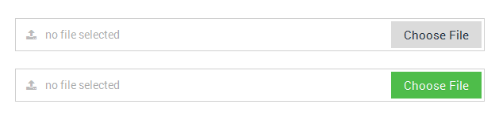The markup for file-input / browser is also somehow different, its markup looks like below
<div class="section">
<label class="field file prepend-icon">
<span class="button"> Choose File </span>
<input type="file" class="gui-file" name="file1" id="file1" onChange="document.getElementById('uploader1').value = this.value;">
<input type="text" class="gui-input" id="uploader1" placeholder="no file selected" readonly>
<label class="field-icon"><i class="fa fa-upload"></i></label>
</label>
</div><!-- end section -->
For multiple file-inputs / browsers you will have to adjust the markup, for example the next uploader should look like this
NOTICE The name changed to name="file2" and id="file2"
ALSO the on change and input below id changed to onChange="document.getElementById('uploader2')and id="uploader2" so the next uploader should also have those values changed for consistency.
<div class="section">
<label class="field file prepend-icon">
<span class="button"> Choose File </span>
<input type="file" class="gui-file" name="file2" id="file2" onChange="document.getElementById('uploader2').value = this.value;">
<input type="text" class="gui-input" id="uploader2" placeholder="no file selected" readonly>
<label class="field-icon"><i class="fa fa-upload"></i></label>
</label>
</div><!-- end section -->
Radio options
<div class="section">
<div class="option-group field">
<label class="option">
<input type="radio" name="radio1" checked>
<span class="radio"></span> Radio Option 1
</label>
<label class="option">
<input type="radio" name="radio1">
<span class="radio"></span> Radio Option 2
</label>
</div><!-- end .option-group section -->
</div><!-- end section -->
Checkbox options
<div class="section">
<div class="option-group field">
<label class="option">
<input type="checkbox" name="checkbox1" checked>
<span class="checkbox"></span> Checkbox Option 1
</label>
<label class="option">
<input type="checkbox" name="checkbox1">
<span class="checkbox"></span> Checkbox Option 2
</label>
</div><!-- end .option-group section -->
</div><!-- end section -->
Toggle switches
A toggle switch can be a radio option or a checkbox option element depending on what your preferences are, to make toggle switches, they also use HTML5 data attribute for the text so you can eaily replace the data-on="YES" and data-off="NO" text with your own text instead of hacking the CSS. Make sure to use is shorter text though, it makes the switch look prettier, the markup will look like this:
<div class="section">
<div class="option-group field">
<label class="switch">
<input type="checkbox" name="switch1" id="switch1" value="switch1">
<label for="switch1" data-on="ON" data-off="OFF"></label>
<span> Switch 1 </span>
</label>
<label class="switch">
<input type="checkbox" name="switch2" id="switch2" value="switch2">
<label for="switch2" data-on="ON" data-off="OFF"></label>
<span> Switch 2 </span>
</label>
</div><!-- end .option-group section -->
</div><!-- end section -->
Star Rating / Review widgets
If you need a cleaner way to add a rating widget to your forms you will use the star rating markup, it also supports hover back after selection. Please note that the star rating works best with fontawesome icons, the alternative would be using unicode characters however they don't look smooth in IE.
<div class="section">
<span class="rating block">
<span class="lbl-text">Customization</span>
<input class="rating-input" id="r5" type="radio" name="custom" checked>
<label class="rating-star" for="r5"><i class="fa fa-star"></i></label>
<input class="rating-input" id="r4" type="radio" name="custom">
<label class="rating-star" for="r4"><i class="fa fa-star"></i></label>
<input class="rating-input" id="r3" type="radio" name="custom">
<label class="rating-star" for="r3"><i class="fa fa-star"></i></label>
<input class="rating-input" id="r2" type="radio" name="custom">
<label class="rating-star" for="r2"><i class="fa fa-star"></i></label>
<input class="rating-input" id="r1" type="radio" name="custom">
<label class="rating-star" for="r1"><i class="fa fa-star"></i></label>
</span>
</div><!-- end section -->
Smart widgets
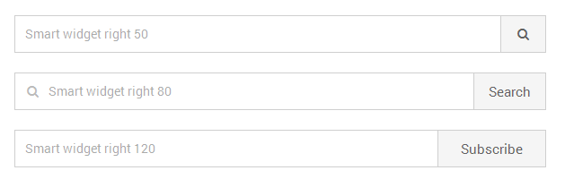Sometimes you need to create a form input element with a button, the smart widget will come to your rescue, it has 3 sizes which can easily be modified to suite your needs.
<div class="section">
<div class="smart-widget sm-right smr-120">
<label class="field">
<input type="text" name="sub3" id="sub3" class="gui-input" placeholder="Smart widget right 120">
</label>
<button type="submit" class="button"> Subscribe </button>
</div><!-- end .smart-widget section -->
</div><!-- end section -->
Form Buttons
Buttons inlude all input buttons, button tag buttons, link (a) buttons, cancel buttons and any element you want to turn into a button. Buttons come in 8 color themes default grey, black, blue, green, purple, red, yellow and primary. To add a button, go to the form buttons section and add a button element then add a button class to it..
Button markup
You can create a button from the following elements
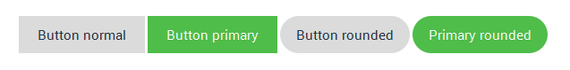<!-- Button with an input type button --> <input type="submit" value="Button" class="button"> <!-- Button with the button element --> <button class="button"> Button </button> <!-- Button with an anchor tag --> <a href="#" class="button"> Button </a>
Rounded Buttons
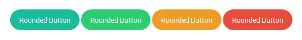<button class="button btn-rounded"> Button Rounded </button>
Pushed Buttons
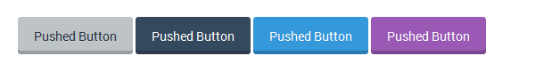<button class="button pushed"> Button Pushed </button>
Left and Right Buttons
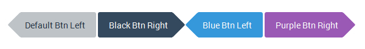<button class="button button-left"> Button Left </button> <button class="button button-right"> Button Right </button>
Pointed Buttons
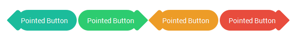<button class="button btn-pointed button-left"> Pointed Button Right </button> <button class="button btn-pointed button-right"> Pointed Button Right </button>
Button themes
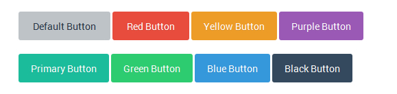<button class="button"> Button Default </button> <button class="button btn-primary"> Button Primary </button> <button class="button btn-red"> Button Red </button> <button class="button btn-blue"> Button Blue </button> <button class="button btn-black"> Button Black </button> <button class="button btn-yellow"> Button Yellow </button> <button class="button btn-purple"> Button Purple </button> <button class="button btn-green"> Button Green </button>
Normal Progress Bars
<div class="progress-bar bar-primary">
<div class="bar"></div>
<div class="percent"></div>
</div>
<div class="progress-bar bar-green">
<div class="bar"></div>
<div class="percent"></div>
</div>
<div class="progress-bar bar-red">
<div class="bar"></div>
<div class="percent"></div>
</div>
<div class="progress-bar bar-yellow">
<div class="bar"></div>
<div class="percent"></div>
</div>
<div class="progress-bar bar-purple">
<div class="bar"></div>
<div class="percent"></div>
</div>
<div class="progress-bar bar-black">
<div class="bar"></div>
<div class="percent"></div>
</div>
<div class="progress-bar bar-blue">
<div class="bar"></div>
<div class="percent"></div>
</div>
Animated Progress Bars
<div class="progress-bar progress-animated bar-primary">
<div class="bar"></div>
<div class="percent"></div>
</div>
Notification Messages / Alerts
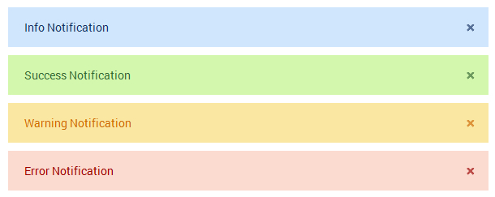
<!-- info notification - blue -->
<div class="notification alert-info">
<p>Info Notification </p>
<a href="#" class="close-btn">×</a>
</div>
<!-- success notification - green -->
<div class="notification alert-success">
<p>Success Notification</p>
<a href="#" class="close-btn">×</a>
</div>
<!-- warning notification - yellow -->
<div class="notification alert-warning">
<p>Warning Notification</p>
<a href="#" class="close-btn">×</a>
</div>
<!-- error notification - red -->
<div class="notification alert-error">
<p>Error Notification</p>
<a href="#" class="close-btn">×</a>
</div>
Form with the Grid System
The Grid system is used for creating form layouts through a series of rows and columns that house your form elements. Here's how the Smart Forms grid system works:
- Use rows
.frm-rowto create horizontal groups of columns.colm. - Content should be placed within columns, and only columns may be immediate children of rows.
- If an element does not require the grid for example a sigle input, dont use the grid, just place it inside a div with a
.sectionclass . - Predefined grid classes like
.frm-rowand.colmare available for quickly making grid form layouts. - Column classes
.colmmust immediately be followed by a column number or value such as.colm4, so the entire class will look like this class ="colm colm4" - Grid form columns are created by specifying the number of twelve available columns you wish to span. For example, three equal columns would use three
.colm4 - You can add your own padding classes to the grid to create more prettier spaced grids for example, using the padding spacers provided you can create more space to the left or right of a given colum grid like this:- class ="
colm colm6 pad-r30"Where by.pad-r30adds a 30px padding to the right of the column, for the left side you can use something like.pad-l30, if you are using your own classes, use padding instead of margin, it works better.
You can build a very complex form using a 12 column grid included in the package.
A combination of all columns in a row must add up to 12 for example:
Two equal columns 6+6 = 12
Two unequal columns 5+7 = 12
Six equal columns 2+2+2+2+2+2 = 12
Three equal columns 4+4+4 = 12
Grid Examples
<!-- 12 Equal Columns --> <div class="frm-row"> <div class="colm colm1">.colm colm1</div> <div class="colm colm1">.colm colm1</div> <div class="colm colm1">.colm colm1</div> <div class="colm colm1">.colm colm1</div> <div class="colm colm1">.colm colm1</div> <div class="colm colm1">.colm colm1</div> <div class="colm colm1">.colm colm1</div> <div class="colm colm1">.colm colm1</div> <div class="colm colm1">.colm colm1</div> <div class="colm colm1">.colm colm1</div> <div class="colm colm1">.colm colm1</div> <div class="colm colm1">.colm colm1</div> </div> <!-- 2 unequal columns left large 8 right small 4 --> <div class="frm-row"> <div class="colm colm8">.colm colm8</div> <div class="colm colm4">.colm colm4</div> </div> <!-- 3 Equal Columns --> <div class="frm-row"> <div class="colm colm4">.colm colm4</div> <div class="colm colm4">.colm colm4</div> <div class="colm colm4">.colm colm4</div> </div> <!-- 2 Equal Columns --> <div class="frm-row"> <div class="colm colm6">.colm colm6</div> <div class="colm colm6">.colm colm6</div> </div>
Grid with form markup
Below is an example of a two column grid using 6+6=12, in case you need something like 3 columns them colm6 will change to colm4 which is 4+4+4=12

<div class="frm-row">
<div class="section colm colm6">
<label for="firstname" class="field prepend-icon">
<input type="text" name="firstname" id="firstname" class="gui-input" placeholder="First name...">
<label for="firstname" class="field-icon"><i class="fa fa-user"></i></label>
</label>
</div><!-- end section -->
<div class="section colm colm6">
<label for="lastname" class="field prepend-icon">
<input type="text" name="lastname" id="lastname" class="gui-input" placeholder="Last name...">
<label for="lastname" class="field-icon"><i class="fa fa-user"></i></label>
</label>
</div><!-- end section -->
</div><!-- end frm-row section -->
Javascript Input Widgets
The rest of the widgets are powered by JQuery, these include date pickers, sliders, numeric steppers, month pickers, time pickers, colorpickers. Their respective markup will be discussed in the Javascript section
CSS Files and Structure
I am loading different styles depending on requirements - however the common ones are smart-forms.css, and fontawesome.css other styles are used for theme purposes or widgets. The forms come with eight themes default grey, primary, blue, red, yellow, black, purple, green.
- smart-forms.css
- font-awesome.min.css
- smart-addons.css
- smart-themes
smart-forms.css
all the main styling is done inside this css file - you can edit or modify form elements and styles indied this file to suit your needs, it comes with the default theme which is primary green
Form Background CSS
You can change the form background image by changing the following styles
/* @backgrounds :: modify or add yours below
------------------------------------------------------------------- */
.darkbg{ background:#6C82A2 url(../images/dark.png) repeat fixed; }
.woodbg{ background:#E6CCA6 url(../images/wood.png) repeat fixed; }
Form Wrapper Width
You can change the form width dimensions by changing the following styles, modify or create your own styles
.wrap-0{ max-width:952px; }
.wrap-1{ max-width:852px; }
.wrap-2{ max-width:652px; }
.wrap-3{ max-width:452px; }
Form Header CSS
You can change the form header by changing the following styles
/* @form header section
----------------------------------------- */
.smart-forms .form-header{
overflow:hidden;
position:relative;
padding:25px 30px;
-webkit-border-radius:5px 5px 0 0 ;
-moz-border-radius:5px 5px 0 0 ;
-o-border-radius:5px 5px 0 0 ;
border-radius:5px 5px 0 0 ;
}
.smart-forms .form-header h4 {
font-family:"Roboto", Arial, Helvetica, sans-serif;
text-align:left;
font-weight:300;
font-size:32px;
padding:0;
margin:0;
}
.smart-forms .form-header h4 i {
font-size:38px;
position:relative;
margin-right:10px;
top:2px;
}
/* @header themes :: primary + lite
---------------------------------------------- */
.smart-forms .header-primary {
background-color:#4ebd4a;
border-top:1px solid #A7D065;
border-bottom:5px solid #3c9b39;
}
.smart-forms .header-lite{
background:#F3F5FA;
border-top:1px solid #A7D065;
border-bottom:1px solid #D9DDE5;
}
.smart-forms .header-lite:before{
content:"";
background-color:#4ebd4a;
position:absolute;
height:8px;
z-index:1;
top:0px;
right:0;
left:0;
}
.smart-forms .header-primary h4{ color:#fff; }
.smart-forms .header-lite h4{ color:#5D6A87; padding-top:5px; }
Form Body and footer
You can change the form body and footer styles by changing the following styles, modify or create your own styles
/* @form body + footer
------------------------------------------------------------------- */
.smart-forms .form-body{ padding:40px 30px; padding-bottom:20px; }
.smart-forms .form-footer {
overflow:hidden;
padding:20px 25px;
padding-top:25px;
background: #F5F5F5;
background: #F5F5F5 url(../images/foobg.png) top left repeat-x;
}
Form Grid
The form grid helps us to create complex forms with complex alignments, the grid styles are below
/* @form columns
----------------------------------- */
.smart-forms .frm-row .colm{
min-height:1px;
padding-left:10px;
padding-right:10px;
position:relative;
float:left;
}
.smart-forms .frm-row .colm1{width:8.33%;}
.smart-forms .frm-row .colm2{width:16.66%;}
.smart-forms .frm-row .colm3{width:25%;}
.smart-forms .frm-row .colm4{width:33.33%;}
.smart-forms .frm-row .colm5{width:41.66%;}
.smart-forms .frm-row .colm6{width:50%;}
.smart-forms .frm-row .colm7{width:58.33%;}
.smart-forms .frm-row .colm8{width:66.66%;}
.smart-forms .frm-row .colm9{width:75%;}
.smart-forms .frm-row .colm10{width:83.33%;}
.smart-forms .frm-row .colm11{width:91.66%;}
.smart-forms .frm-row .colm12{width:100%; }
.smart-forms .frm-row .colm1-5{width:20%;}
.smart-forms .frm-row .colm1-8{width:12.5%;}
Managing Form Themes
The forms come with Three styles (FLAT, ELEGANT, DARK), and each style has - eight themes default grey, primary, blue, red, yellow, black, purple, green. You can choose any theme depending on your requirements. To easily create and manage themes, i created a folder inside the CSS folder named smart-themes inside smart-themes are 6 stylesheets representing 6 themes - two other themes (primary and default gray) come with the default stylesheet smart-forms.css so if you are using default themes you wont need to load an extra stylesheet.
Creating your theme
To create your theme, go to the themes folder smart-themes, open one of the theme stylesheets for example if you want you can modify the blue theme - open blue.css, create a copy of it and rename it to your own theme eg gold.css now modify the element colors and background colors, hover colors and focus colors, you will notice that most colors have similar values and background colors so you can choose to replace the colors at will with yours, after making the necessary changes you will load your own theme.
Load your theme style
The theme style loads just below the main form stylesheet, in the example below we've added a blue theme stylesheet from the smart-themes folder like this:
Please note that in our example we shall use the blue theme but all other themes will have similar adjustments in case used for example all that will change is the word blue to green or yellow or red or any other theme colors chosen the rest will be the same
<head>
<!-- Form styleshets + Blue theme loaded -->
<link rel="stylesheet" type="text/css" href="css/smart-forms.css">
<link rel="stylesheet" type="text/css" href="css/smart-themes/blue.css">
<link rel="stylesheet" type="text/css" href="css/font-awesome.min.css">
</head>
Make theme adjustments
The theme style loaded doesn't make all the necessary adjustments, you will have to make more changes to your forms so that the theme changes take complete effect. The reason for these further adjustments is because with smart forms, you can actually combine more than one theme styles inside a single form so that you have complete control over how your form looks like, so we shall make further adjustments to the following elements below by just hooking on a theme color:
- form-header
- form-body
- button elements
- option elements (checkboxes and radios)
- toggle switch elements
Form header adjustments
On the form header add the blue theme color NOTICE: the header-blue class added, if your theme is green you will use header-green and so on like this:
<div class="form-header header-blue">
<h4><i class="fa fa-comments"></i>Get in touch</h4>
</div><!-- end .form-header blue section -->
Form body adjustments
On the form body add the theme blue color NOTICE: the theme-blue class added, if your theme is green you will use theme-green this takes care of the input hover and focus colors among other things:
<form method="post" action="/" id="contact">
<!-- START FORM BODY THEME BLUE -->
<div class="form-body theme-blue">
<!-- ALL FORM ELEMENTS WILL GO HERE -->
</div><!-- end .form-body section -->
</form>
Form buttons adjustments
Buttons are located inside the form footer but you can put them any where NOTICE: the btn-blue class added, if your button is green you will use btn-green and the rest of the theme colors to match the themes
<div class="form-footer">
<button type="submit" class="button btn-blue">Submit</button>
</div><!-- end .form-footer section -->
Form Options (Checkboxes and radios)
just add a class opton-blue or green or red after the option class depending on your theme, the same applies to radio options
<label class="option option-blue">
<input type="checkbox" name="checkbox1">
<span class="checkbox"></span> Checkbox Option 2
</label>
Toggle swithes
just add a class switch-blue or green or red after the option class depending on your theme
<label class="switch switch-blue">
<input type="checkbox" name="switch1" id="switch1" value="switch1">
<label for="switch1" data-on="ON" data-off="OFF"></label>
<span> Switch 1 </span>
</label>
TWIP - Themes work in progress
More themes and styles will be released soon, i am also working on integrating all themes in one stylesheet to be accessible for all elements, it will be my first major update within the first month of release...
But i want to use the forms in my own existing designs....
No green headers or designer footers, or shadows around the wrapper, just basic form elements only, you get what i mean???!
Yes i do, and smart forms are ready for this challenge, let us open any of the folders and look for Template samples Inside there look for this sample form contact-form-with-google-map.html Save a copy of it and open it in a text editor - your favourite (Dreamweaver, Coda, Notepad ++ or any)
- Remove the body background - Change it from this
<body class="woodbg">to this<body>and by the way if you are incorporating the forms i your own template you dont even need the body section that comes with the forms, just copy all the contents with the body section. - Remove container wrappers - I mean this
<div class="smart-forms smart-container wrap-0">to this<div class="smart-forms"> - Remove / Rename the header theme class - I mean this
<div class="form-header header-primary">to something like this<div class="form-header">or this<div class="form-header header-custom">of course you will styleheader-customto your needs with CSS - Remove / Rename the form-body class - I mean this
<div class="form-body">to this<div class="form-body-custom">of course you will styleform-body-customto your needs with CSS - Remove / Rename the form-footer class - I mean this
<div class="form-footer">to this<div class="form-footer-custom">of course you will styleform-footer-customto your needs with CSS - Now the form should look basic with functional elements only - That's it
JavaScript
Smart Forms depend on different jQuery plugins for progressive enhancement of some widgets. These plugins are included for various purposes
- jQuery Library - The jQuery library is the main core library used in the forms to perform various tasks, i have included version 1.9.1 but any version from 1.8+ should be able to work
- jQuery UI custom - This is a custom light weight build for jQuery UI latest version 1.10.4, it only includes the core files ui slider and datepicker
- jQuery Form - This plugin is used for purposes of AJAX form submitions
- jQuery Masked Input - This plugin is used for form input masking
- jQuery Placeholder - This plugin is used for adding the placeholder attribute in old Internet Explorer browsers versions 9 and below
- jQuery Validate - This plugin is used for form validation
- jQuery Additional Methods - This plugin is used for additional form validation methods
- jQuery Spectrum - Color picker plugin
- jQuery Stepper - Numeric stepper plugin
- jQuery UI Month Picker - Extends the UI date picker plugin with ability to pick months
- jQuery UI Time Picker - Extends the UI date picker plugin with ability to pick time
- jQuery UI Touch Punch - Adds touch support for touch enabled devices to all jQuery UI plugins (such as the slider, drag and drop etc)
Setting up javacript in your document head section
IMPORTANT You can include only the javacript you need, please dont include everything - for example if you are not using masking, then remove that plugin from your setup
<script type="text/javascript" src="js/jquery-1.9.1.min.js"></script> <script type="text/javascript" src="js/jquery-ui-1.10.4.custom.min.js"></script> <script type="text/javascript" src="js/jquery.form.min.js"></script> <script type="text/javascript" src="js/jquery.maskedinput.js"></script> <script type="text/javascript" src="js/jquery.validate.js"></script> <script type="text/javascript" src="js/additional-methods.js"></script>
Placeholder support in old IE versions 6-9
<!--[if lte IE 9]> <script type="text/javascript" src="js/jquery.placeholder.min.js"></script> <![endif]-->
Form validation
Sometimes you need your form visitors not to skip some form elements or leaving them empty, the jQuery Validation plug-in helps us enforce clientside (browsers side) validation so that we get the information we’re after before the visitor submits the forms. Including validation plugins in the head section of your html document follows these simple steps:
- Incluse the main jQuery Library
- Include the jQuery Validate plugin
- Include jQuery Additional Methods
<script type="text/javascript" src="js/jquery-1.9.1.min.js"></script> <script type="text/javascript" src="js/jquery.validate.js"></script> <script type="text/javascript" src="js/additional-methods.js"></script>
We use the two jQuery validation plugins to perform form validation, the process of validating a form is quite straight forward - you have a form selector you want to validate lets say your form has an id as contact id="contact" We call, that ID, setup validation rules, setup validation messages, and lastly we setup error message placement
Next just below the above added scripts in the head section of our document, we add another script and inside it we put a function where we shall write all our validation rules, this function tells the browser that when all resources are loaded / on DOM ready do something:, it looks like below
<script type="text/javascript">
$(function() {
/* validation rules will go here */
});
</script>
Simple validation
The files used in the this example are located inside elegant folder > Javacript enhancements > form-validation-tests2.html
We create a simple test form with an ID id="contactform" to confirm that our validation plugins are working - load all the css and the above validation plugins and below the plugins load the above function in shot your javacript should look like this:
<script type="text/javascript" src="js/jquery-1.9.1.min.js"></script>
<script type="text/javascript" src="js/jquery.validate.js"></script>
<script type="text/javascript" src="js/additional-methods.js"></script>
<script type="text/javascript">
$(function() {
$('#contactform').validate();
});
</script>
Our test form should look like this
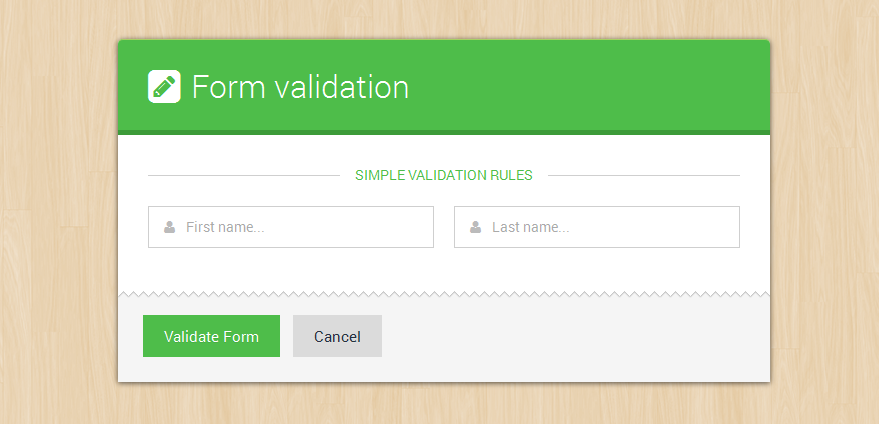Test form markup looks like this, please notice on the form i added an ID id="contactform":
So the $("#contactform") rule above, uses jQuery to select that form, and validate() applies the validation plug-in to the form. However, the form won’t get validated until you specify some validation rules. So first, you'll make the firstname field required which will produce an error message upon validation.
<form method="post" action="/" id="contactform">
<div class="form-body">
<div class="spacer-b30">
<div class="tagline"><span> Simple validation rules </span></div><!-- .tagline -->
</div>
<div class="frm-row">
<div class="section colm colm6">
<label for="firstname" class="field prepend-icon">
<input type="text" name="firstname" id="firstname" class="gui-input required" placeholder="First name...">
<label for="firstname" class="field-icon"><i class="fa fa-user"></i></label>
</label>
</div><!-- end section -->
<div class="section colm colm6">
<label for="lastname" class="field prepend-icon">
<input type="text" name="lastname" id="lastname" class="gui-input required" placeholder="Last name...">
<label for="lastname" class="field-icon"><i class="fa fa-user"></i></label>
</label>
</div><!-- end section -->
</div><!-- end .frm-row section -->
</div><!-- end .form-body section -->
<div class="form-footer">
<button type="submit" class="button btn-primary"> Validate Form </button>
<button type="reset" class="button"> Cancel </button>
</div><!-- end .form-footer section -->
</form>
I have added a required class (class="gui-input required") on each form input to make the inputs respond to validation:
When you click the validate button the form should bring errors like this in the image below, Don’t worry about the appearance of the error message just yet. You’ll learn how to format error messages later on :
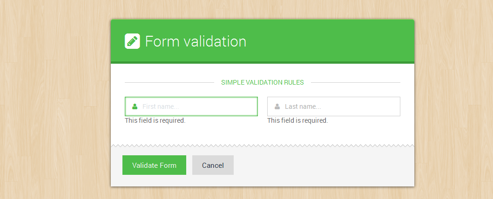
Advanced validation
The files used in the this example are located inside elegant folder > Javacript enhancements > form-validation-tests3.html
The jQuery validation plugin allows us to go beyond the flow with validation, create custom methods, add highlights, custom error messages and placements, there are some things you can’t do with the basic validation methods, like assign different error messages for different validation problems, or require a specific number of characters for input. In these cases, you need to use the Validation plug-in's advanced approach for creating validation rules and error messages.

Lets add some form elements modify our function alittle bit now, intead the new one should look like this
<script type="text/javascript">
$(function() {
$("#contactform").validate({
}); // end validate
});
</script>
Add opening and closing braces between the parentheses in validate(), add an empty line between the braces, and add a JavaScript comment at the end. The comment is a note to identify the end of the validate() function. You’ll soon be filling the script with braces and parentheses, so it can get tricky to remember which brace goes with what. This comment ( // end validate ) can help keep you from getting confused, but like all comments in code, it’s optional.
Next, you’ll create the basic skeleton for adding validation rules.
<script type="text/javascript">
$(function() {
$("#contactform").validate({
}); // end validate
});
</script>
Adding rules
<script type="text/javascript">
$(function() {
$("#contactform").validate({
rules: {
} // end rules
}); // end validate
});
</script>
The above code creates an empty object, which you’ll fill with specific field names and validation methods. In addition, a JavaScript comment identifies the end of the rules object. Next, you’ll add rules for the firstname, lastname and useremail fields.
<script type="text/javascript">
$(function() {
$("#contactform").validate({
rules: {
firstname: {
required: true
},
lastname: {
required: true
},
useremail: {
required: true,
email: true
}
} // end rules
}); // end validate
});
</script>
NOTE: the validation rule must correspond with the input name attribute like below name="useremail" , thats what we use to write the rule
<input type="email" name="useremail" class="gui-input" >
In the above, we’ve added another object literal. Using the useremail: rule as our example, The first part, useremail:, is the name of the field you wish to validate and matches the field’s name attribute (name="useremail") in the HTML markup shown above. Next, two validation methods are specified—the field is required:true (meaning visitors must fill it in if they want to submit the form), and the input email:true input entry must match the form of an email address.
Now when we test our form looks like below: Notice the: This field is required. message below the inputs we shall style that message later to make it red
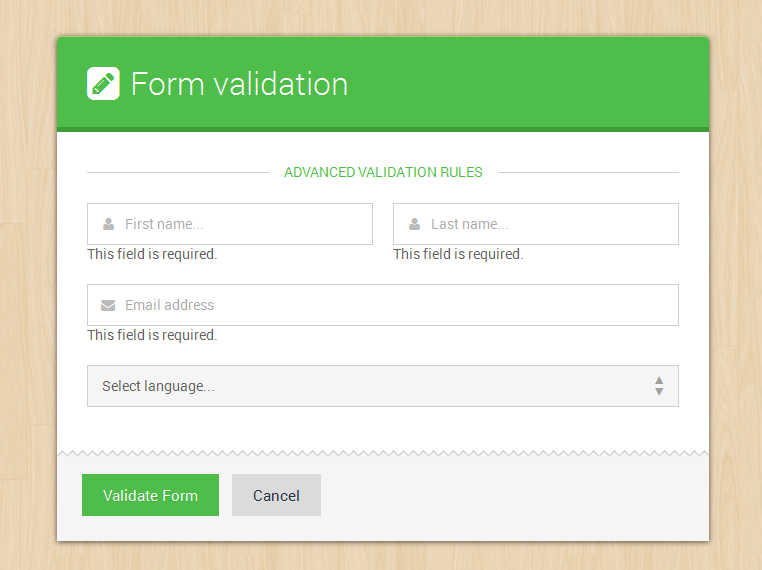
Adding Messages
The jQuery plugin also allows us to specify our own messages through another object
<script type="text/javascript">
$(function() {
$("#contactform").validate({
rules: {
firstname: {
required: true
},
lastname: {
required: true
},
useremail: {
required: true,
email: true
}
}, // end rules
messages: {
} // end messages
}); // end validate
});
</script>
The above code represents yet another object literal, named messages. This object will contain any error messages you wish to add to your form fields. Again, the comment at the end — // end messages — is optional. Now you’ll add the actual error messages for our required fields. Please notice that rules ends with a comma because i have added another object below it
<script type="text/javascript">
$(function() {
$("#contactform").validate({
rules: {
firstname: {
required: true
},
lastname: {
required: true
},
useremail: {
required: true,
email: true
}
}, // end rules
messages: {
firstname: {
required: 'Enter your first name'
},
lastname: {
required: 'Enter your last name'
},
useremail: {
required: 'Enter your email address',
email: 'Enter a VALID email address'
}
} // end messages
}); // end validate
});
</script>
The messages actually look like rules, the only exception is that they have words in brackets, you can try any words of your choice there depending on your fields
Validating Checkboxes and Radio Options
The files used in the this example are located inside elegant folder > Javacript enhancements > form-validation-tests4.html
The problem with validating checkboxes and radio options
Checkboxes and radio buttons usually come in groups, and typically, adding validation to several checkboxes or radio buttons in a single group is a tricky process of finding all boxes or buttons in a group. Fortunately, the Validation plug-in takes care of the hard parts, and makes it easy for you to quickly validate the form options.
A case for checkboxes and radio buttons
Checkboxes in a group usually share the same name attribute, so the Validation plug-in treats them as a group. In other words, the validation rule applies to all the checkboxes. In essence, for checkboxes in agroup the visitors are required to checkmark AT LEAST ONE checkbox before they can submit the form, however for checkboxes you can checkmark more than one but when one is selected, the rest in the group will be validated automatically...
In a related matter, a group of radio buttons always shares the same name, so even though you’ve added a single rule and error message, it will apply to all the radios in a group. Because the radio field is required, visitors must select ONLY one of the radio buttons to submit the form.
Lets add some check and radio options to our form (test4)
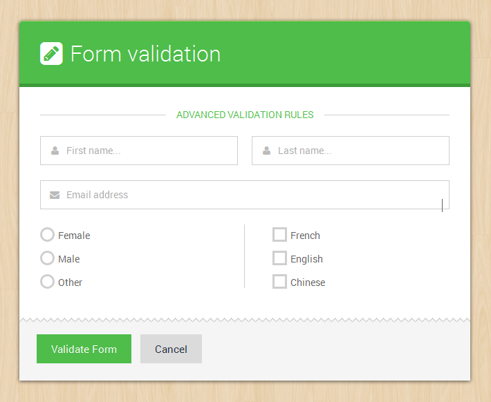The gender group (female, male, other) are radio buttons, while the languages group (French, English and Chinese) is a checkbox group
Rules for check and radio options
<script type="text/javascript">
$(function() {
$("#contactform").validate({
rules: {
firstname: {
required: true
},
lastname: {
required: true
},
useremail: {
required: true,
email: true
},
gender: {
required: true
},
languages: {
required: true
}
}, // end rules
messages: {
firstname: {
required: 'Enter your first name'
},
lastname: {
required: 'Enter your last name'
},
useremail: {
required: 'Enter your email address',
email: 'Enter a VALID email address'
},
gender: {
required: 'Please choose gender'
},
languages: {
required: 'Select laguages spoken'
}
} // end messages
}); // end validate
});
</script>
After adding the rules for gender and languages You may notice something looks a bit odd: When the error messages for the checkbox and radio buttons appear, they come directly before the first checkbox and radio button (circled in red below ).
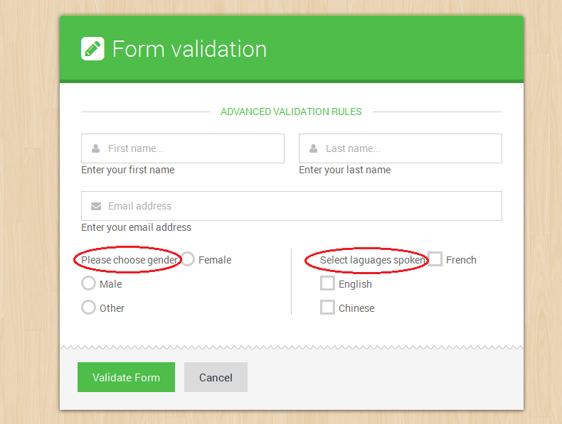
Error placement to the rescue
The Validation plug-in places the error message directly after the form field that you apply the validation rule to. Normally, that’s OK: When the message appears directly after a text field or select drop menu, it looks fine (as in the earlier examples). But in the case of radios and checkboxes, the message should go somewhere else, preferably after all of the checkboxes or radio buttons.
Fortunately, the Validation plug-in has a way to control the placement of error messages. You can create your own rules for error-message placement by passing another object literal to the validate() function.
Locate the validation script you added earlier, and type a comma after the closing brace for the messages object (but before the // end messages comment). Insert a blank line after the messages object, and then type:
<script type="text/javascript">
$(function() {
$("#contactform").validate({
rules: {
firstname: {
required: true
},
lastname: {
required: true
},
useremail: {
required: true,
email: true
},
gender: {
required: true
},
languages: {
required: true
}
}, // end rules
messages: {
firstname: {
required: 'Enter your first name'
},
lastname: {
required: 'Enter your last name'
},
useremail: {
required: 'Enter your email address',
email: 'Enter a VALID email address'
},
gender: {
required: 'Please choose gender'
},
languages: {
required: 'Select laguages spoken'
}
}, // end messages
errorPlacement: function(error, element) {
if (element.is(":radio") || element.is(":checkbox")) {
element.closest('.option-group').after(error);
} else {
error.insertAfter(element.parent());
}
} // end error placement
}); // end validate
});
</script>
The Validation plug-in is programmed to accept an optional errorPlacement object, which is just an anonymous function that determines where an error message is placed. Every error is sent through this function, so if you only want to change the placement of some error messages, you’ll need to use a conditional statement to identify the form elements whose errors you wish to place. The function receives both the error message and the form element the error applies to, so you can use a conditional statement to check whether the form field is either a radio button of a checkbox. If it is, the error message is added after the element containing the button or checkbox (option-group).
In our forms, we wrap a div around the group of checkboxes, and another div tag wraps the radio buttons with a class (.option-group). So the error message is placed just after the closing div tag using jQuery’s closest() function.
Error styling and element highlighting
The files used in the this example are located inside elegant folder > Javacript enhancements > form-validation-tests5.html
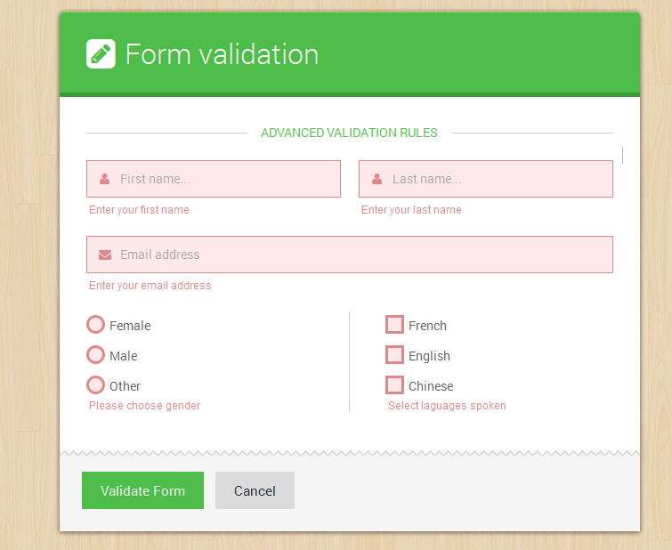The Validation plug-in has other optional highlight and unhighlight objects which help us to style and highlight errors in more advanced ways, since most elements are wrapped in a a div or label that has a class .field we shall add an error or success class to that element .field so that we can style elemnts form inside that element.
Lastly we shall define our own custom error classes for hghlighting which will help us to style the form elements, and also a custom error element instead of a label, our error element will be an em, we place these before the rules, see our final script below.
<script type="text/javascript">
$(function() {
$("#contactform").validate({
errorClass: "state-error",
validClass: "state-success",
errorElement: "em",
rules: {
firstname: {
required: true
},
lastname: {
required: true
},
useremail: {
required: true,
email: true
},
gender: {
required: true
},
languages: {
required: true
}
}, // end rules
messages: {
firstname: {
required: 'Enter your first name'
},
lastname: {
required: 'Enter your last name'
},
useremail: {
required: 'Enter your email address',
email: 'Enter a VALID email address'
},
gender: {
required: 'Please choose gender'
},
languages: {
required: 'Select laguages spoken'
}
}, // end messages
highlight: function(element, errorClass, validClass) {
$(element).closest('.field').addClass(errorClass).removeClass(validClass);
}, // end highlight
unhighlight: function(element, errorClass, validClass) {
$(element).closest('.field').removeClass(errorClass).addClass(validClass);
}, // end unhighlight
errorPlacement: function(error, element) {
if (element.is(":radio") || element.is(":checkbox")) {
element.closest('.option-group').after(error);
} else {
error.insertAfter(element.parent());
}
} // end error placement
}); // end validate
});
</script>
Formating Success and Error states with css
Now the page has working form validation, but the error messages don’t look very good. Not only are they spread around the page, but they don’t stand out the way they should. They’d look a lot better if they were bold, red, and appeared underneath the form field they apply to. You can make all of those formatting changes with a little simple CSS.
The CSS properties themselves are pretty basic: First, the font size is reduced, next, the color is changed to red, the inputs are given a red border and red background color. The display: block instruction informs the browser to treat the em tag after the element with an error class as a block-level element. That is, instead of putting the error message next to the form field, the browser treats the error like a paragraph of its own, with line breaks above and below.
Below are the full css rules that make all that possible
/* @validaion - error state
------------------------------------- */
.smart-forms .state-error .gui-input,
.smart-forms .state-error .gui-textarea,
.smart-forms .state-error.select > select,
.smart-forms .state-error.select-multiple > select,
.smart-forms .state-error input:hover + .checkbox,
.smart-forms .state-error input:hover + .radio,
.smart-forms .state-error input:focus + .checkbox,
.smart-forms .state-error input:focus + .radio,
.smart-forms .state-error .checkbox,
.smart-forms .state-error .radio{
background:#FEE9EA;
border-color:#DE888A;
}
.smart-forms .state-error .gui-input:focus,
.smart-forms .state-error .gui-textarea:focus,
.smart-forms .state-error.select > select:focus,
.smart-forms .state-error.select-multiple > select:focus{
-webkit-box-shadow:0px 0px 3px #DE888A inset;
-moz-box-shadow:0px 0px 3px #DE888A inset;
-o-box-shadow:0px 0px 3px #DE888A inset;
box-shadow:0px 0px 3px #DE888A inset;
}
.smart-forms .state-error .gui-input ~ .field-icon i,
.smart-forms .state-error .gui-textarea ~ .field-icon i{ color: #DE888A; }
.smart-forms .state-error.select .arrow { color: #DE888A; }
.smart-forms .state-error.select > select:focus + .arrow{ color:#DE888A; }
.smart-forms .state-error .gui-input ~ .input-hint,
.smart-forms .state-error.file .gui-file:hover + .gui-input,
.smart-forms .state-error .gui-textarea ~ .input-hint { border-color:#DE888A; }
.smart-forms .state-error + em{
display: block!important;
margin-top: 6px;
padding: 0 3px;
font-family:Arial, Helvetica, sans-serif;
font-style: normal;
line-height: normal;
font-size:0.85em;
color:#DE888A;
}
/* @validaion - success state
-------------------------------------------------- */
.smart-forms .state-success .gui-input,
.smart-forms .state-success .gui-textarea,
.smart-forms .state-success.select > select,
.smart-forms .state-success.select-multiple > select,
.smart-forms .state-success input:hover + .checkbox,
.smart-forms .state-success input:hover + .radio,
.smart-forms .state-success input:focus + .checkbox,
.smart-forms .state-success input:focus + .radio,
.smart-forms .state-success .checkbox,
.smart-forms .state-success .radio{
background:#F0FEE9;
border-color:#A5D491;
}
.smart-forms .state-success .gui-input:focus,
.smart-forms .state-success .gui-textarea:focus,
.smart-forms .state-success.select > select:focus,
.smart-forms .state-success.select-multiple > select:focus{
-webkit-box-shadow:0px 0px 3px #A5D491 inset;
-moz-box-shadow:0px 0px 3px #A5D491 inset;
-o-box-shadow:0px 0px 3px #A5D491 inset;
box-shadow:0px 0px 3px #A5D491 inset;
}
.smart-forms .state-success .gui-input ~ .field-icon i,
.smart-forms .state-success .gui-textarea ~ .field-icon i{ color: #A5D491; }
.smart-forms .state-success.select .arrow { color: #A5D491; }
.smart-forms .state-success.select > select:focus + .arrow{ color:#A5D491; }
.smart-forms .state-success.select:before { border-left:1px solid #A5D491; }
.smart-forms .state-success .gui-input ~ .input-hint,
.smart-forms .state-success.file .gui-file:hover + .gui-input,
.smart-forms .state-success .gui-textarea ~ .input-hint { border-color:#A5D491; }
Form input Masking
Unlike Validation masking targets a given input selector, which can be a class or ID, it is usually better to use ID selectors for masking, some rules are listed below
<script type="text/javascript">
$(function() {
$("#telephone").mask('(999) 999-999999', {placeholder:'X'});
$("#zipcode").mask('99999', {placeholder:'X'});
$("#dates").mask('99/99/9999', {placeholder:'X'});
$("#serial").mask('***-****-****-****', {placeholder:'_'});
});
</script>
Javascript Input Widgets
Some widgets are powered by JQuery Plugins, these include date pickers, sliders, numeric steppers, month pickers, time pickers, colorpickers. Here is a breakdowm of their respective markup and Javascript
Date Picker
Date picker helps us to easily choose date or date ranges! It is poweered by a smaller custom build of the jQuery UI Library
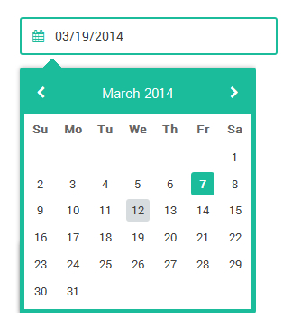Include these scripts in the head section of your document
<script type="text/javascript" src="js/jquery-1.9.1.min.js"></script> <script type="text/javascript" src="js/jquery-ui-1.10.4.custom.min.js"></script>
Create the HTML markup for the datepicker (Usually an input type text)
<div class="section">
<label class="field">
<input type="text" name="datepicker1" id="datepicker1" class="gui-input">
</label>
</div><!-- end section -->
Then call the datepicker with the desired settings, just below the top scripts added
<script type="text/javascript">
$(function() {
$("#datepicker1").datepicker({
numberOfMonths: 1,
prevText: '<i class="fa fa-chevron-left"></i>',
nextText: '<i class="fa fa-chevron-right"></i>',
showButtonPanel: false
});
});
</script>
Inline Date Picker
For Inline Date pickers just hook the picker to the div element instead of an input so the markup will be like so:
<div class="section cal-widget"> <div class="inline-calender"></div> </div>
Then iitialize the JS like so, don't repeat the $(function(){ }); in case you have multiple pickers
<script type="text/javascript">
$(function() {
$(".inline-calender").datepicker({
numberOfMonths: 1,
prevText: '<i class="fa fa-chevron-left"></i>',
nextText: '<i class="fa fa-chevron-right"></i>'
});
});
</script>
Month Picker
Month picker extends the UI Date picker - to depict months and years
Add the month picker extension script to the already added datepicker scripts in the head section of your document
<script type="text/javascript" src="js/jquery-1.9.1.min.js"></script> <script type="text/javascript" src="js/jquery-ui-1.10.4.custom.min.js"></script> <script type="text/javascript" src="js/jquery-ui-monthpicker.min.js"></script>
Create the HTML markup for the Month Picker its hooked to an input type text - no support for the inline version
<div class="section">
<label class="field">
<input type="text" name="month-picker1" id="month-picker1" class="gui-input">
</label>
</div><!-- end section -->
Then call the Monthpicker with the desired settings, just below the top scripts added
<script type="text/javascript">
$(function() {
$("#month-picker1").monthpicker({
changeYear: false,
stepYears: 1,
prevText: '<i class="fa fa-chevron-left"></i>',
nextText: '<i class="fa fa-chevron-right"></i>',
showButtonPanel: true
});
});
</script>
Time Picker
The Time picker extends the UI Date picker - to depict time
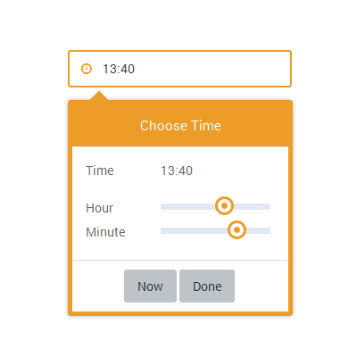Add the time picker extension script to the already added datepicker scripts in the head section of your document
The add the touch punch extension since the time picker uses the sider you will need to support dragging the slider pointer on touch devices
<script type="text/javascript" src="js/jquery-1.9.1.min.js"></script> <script type="text/javascript" src="js/jquery-ui-1.10.4.custom.min.js"></script> <script type="text/javascript" src="js/jquery-ui-timepicker.min.js"></script> <script type="text/javascript" src="js/jquery-ui-touch-punch.min.js"></script>
Create the HTML markup for the time picker its hooked to an input type text it also support the inline version being hooked on to the datepicker widget
<div class="section">
<label class="field">
<input type="text" name="timepicker1" id="timepicker1" class="gui-input">
</label>
</div><!-- end section -->
Then call the Time picker with the desired settings, just below the top scripts added
We first create a variable var smartpickerWrapper that stores our wrapper, we shall call it on beforeShow: this means that before the timepicker shows, we wrap it around our created variable, then when the datepicker / timepicker closes onClose: we remove our wrapper completely from DOM to prevent it adding more DOM elements in case another picker is opened. Infact if you are reading this manual for learning purposes, we can use a similar technique to create multiple themed datepickers / timepickers / monthpickers on the same page!
<script type="text/javascript">
$(function() {
var smartpickerWrapper = '<div class="smart-forms"><div class="yellow-slider"></div></div>';
$('#timepicker1').timepicker({
beforeShow: function(input, inst) {
inst.dpDiv.unwrap().unwrap(smartpickerWrapper);
var smartpikr = inst.dpDiv.parent();
if (!smartpikr.hasClass('smart-forms')){
inst.dpDiv.wrap(smartpickerWrapper);
}
},
onClose: function(input, inst) {
inst.dpDiv.unwrap().unwrap(smartpickerWrapper);
}
});
});
</script>
Date Time Picker
The Scripts are the same as for the timepicker only the initialization changes instead of $('#selector').timepicker we use $('#selector').datetimepicker, the rest is normal stuff!
Initialize it like so
<script type="text/javascript">
$(function() {
var smartpickerWrapper = '<div class="smart-forms"><div class="yellow-slider"></div></div>';
$('#dtimepicker1').datetimepicker({
prevText: '<i class="fa fa-chevron-left"></i>',
nextText: '<i class="fa fa-chevron-right"></i>',
beforeShow: function(input, inst) {
inst.dpDiv.unwrap().unwrap(smartpickerWrapper);
var smartpikr = inst.dpDiv.parent();
if (!smartpikr.hasClass('smart-forms')){
inst.dpDiv.wrap(smartpickerWrapper);
}
},
onClose: function(input, inst) {
inst.dpDiv.unwrap().unwrap(smartpickerWrapper);
}
});
});
</script>
Color Picker and Numeric Stepper Widgets
The following styles are required for both these widgets to work
<link rel="stylesheet" type="text/css" href="css/smart-forms.css"> <link rel="stylesheet" type="text/css" href="css/smart-addons.css">
The Numeric Stepper
1 - Add the required Javascript files (stepper plugin + The jQuery Library)
<script type="text/javascript" src="js/jquery-1.9.1.min.js"></script> <script type="text/javascript" src="js/jquery.stepper.min.js"></script>
2 - Create the HTML markup for the numeric stepper ( usually an input type text )
<label class="field"> <input type="text" name="stepper" id="stepper" class="gui-input"> </label>
3 - Initialize it with Js - And done!
<script type="text/javascript">
$(function() {
$('#stepper').stepper();
});
</script>
4 - Oh May be set some options
<script type="text/javascript">
$(function() {
$('#stepper4').stepper({
UI: false,
allowWheel :false,
limit: [0, 10],
wheel_step: 1,
arrow_step: 0.2
});
});
</script>
Color Picker
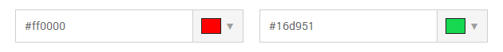1 - Add the required Javascript files (spectrum color plugin + The jQuery Library)
<script type="text/javascript" src="js/jquery-1.9.1.min.js"></script> <script type="text/javascript" src="js/jquery.spectrum.min.js"></script>
2 - Create the HTML markup for the colorpicker ( usually an input type text )
Important note: all enclosing field labels should include the class sfcolor - see example markup below!
<label class="field sfcolor"> <input type="text" name="colorpicker1" id="colorpicker1" class="gui-input"> </label>
3 - Initialize it with Js - And done!
<script type="text/javascript">
$(function() {
$("#colorpicker1").spectrum({
color: "#FCD208"
});
$("#colorpicker1").show();
});
</script>
4 - Oh May be set some options as well
<script type="text/javascript">
$(function() {
$("#colorpicker1").spectrum({
color: "#FCD208",
showInput: true,
showPalette: true,
showAlpha: true
});
});
</script>
Google Map
1 - Add the required google map javascript files
<script type="text/javascript" src="https://maps.googleapis.com/maps/api/js?v=3.exp&sensor=false"></script>
2 - Initialize the google map
<script type="text/javascript">
function initialize() {
var mapOptions = {
zoom: 10,
center: new google.maps.LatLng(29.760193, -95.369390),
mapTypeId: google.maps.MapTypeId.ROADMAP
};
var map = new google.maps.Map(document.getElementById('map_canvas'), mapOptions);
var marker = new google.maps.Marker({
map: map,
draggable: false,
position: new google.maps.LatLng(29.760193, -95.369390)
});
}
google.maps.event.addDomListener(window, 'resize', initialize);
google.maps.event.addDomListener(window, 'load', initialize);
</script>
3 - Set the longtude and Latitude coordinates, look for these values in the above code LatLng(29.760193, -95.369390) then change them to your location values
4 - Add the map HTML markup - Just add these lines below to where you want the map to appear
<div class="map-container"> <div id="map_canvas"></div> </div>
Form processing with Ajax and PHP
We have had such a long journey upto this point and i would like to commend your patience with reading the documentation, however if you have jumped in from this section, well that's still all fine. You may however have to catch up on the previous section to learn more about client side validation.
That out of the way, i have done a CSS form framework before on codecanyon which i believe has some good UI, but the commonest support questions i attend to from my awesome buyers is they need a PROCESSING SCRIPT to be able to receive the form on to their EMAILS. That's what this topic is all about. When it comes to this area, i am actually not well vast with many languages, so we shall use PHP which i am somehow currently familiar with.
Sending forms with ajax and PHP
We are using PHPMailer() Class to do all the heavy lifting
Files for Sending forms with ajax and PHP are located under each style inside a folder named Ajax and php
Smart Forms utilizes the power of PHPMailer() Class - A full-featured email creation and transfer class for PHP for sending emails, PHPMailer is probably the world's most popular code for sending email from PHP, being used by many open-source projects such as Drupal, SugarCRM, Yii, Joomla! and many more. It has a fully Integrated SMTP support - send without a local mail server, Multipart/alternative emails for mail clients that do not read HTML email, Support for 8bit, base64, binary, and quoted-printable encoding, SMTP authentication with LOGIN, PLAIN, NTLM and CRAM-MD5 mechanisms, Send emails with multiple TOs, CCs, BCCs and REPLY-TOs, DKIM and S/MIME encryption support and much more. For more about the project you can find it on GITHUB
I would recommend using forms locacted inside the Sendmail folders instead of SMTP unless your server doesn't support Sendmail
Scripts we shall be working with
- PHPMailerAutoload.php - PHPMailer loader script (loads all the other mailer scripts)
- smartprocess.php The processing script - Configurations and settings for our processing script (this also loads the above loader script and the message script below)
- smartmessage.php The html email template - Configurations and Setting up our message
- captcha.php - Captcha script for handling verification images
Please note that scripts 2 and 3 are the ones we make changes too. Don't modify script 1 and 4 unless you know what you are doing....
A Quick Start - if you just need to setup your form in seconds.... or minutes
Basically you create a php folder within your form folder and include all the relevant PHPMailer files, you may want to include only vital files in your project. At the very least you will need class.phpmailer.php. If you're using SMTP, you'll need class.smtp.php, and if you're using POP-before SMTP, you'll need class.pop3.php. For all of these, you may use the autoloader too.
I created a php file named smartprocess.php in all the Ajax and PHP form folders, it is located inside the php folder of each form - thats where all my setting are done, so that is the only single file you need to modify and setup your recepient email addresses subjects and much more...
1 - Enter your name or company name e.t.c - replace the words Hello
$receiver_name = "Hello";
2 - Enter your email address - this is the address where the form details will be sent - when a visitor fills the form
$receiver_email = "address@example.com";
3 - Enter your subject - the subject basically uniquely distinguishes your message from other messages in the inbox, i mean if you open your email, all messages from your form will have this subject as the attention - for example if its a contact form your subject may something like - New Contact Message, or if its an order form something like - New Order, you get what i mean!
$msg_subject = "Your Subject Here";
4 - In case you need the form details to be sent to more than one email address (other than the one you set up above), Look for this part in smartprocess.php just change the first line $recipients = false; below to true and then add the other email addresses, you can add other addresses or remove just follow the same order with a comma after a new address, replace address@example.com, with your other address, then enter the corresponding name on - Recipient Name (optional)
$recipients = false;
if($recipients == true){
$recipients = array(
"address@example.com" => "Recipient Name",
"address@example.com" => "Recipient Name"
);
foreach($recipients as $email => $name){
$mail->AddBCC($email, $name);
}
}
5 - Upload the files to your server, and you are done... thats it really for all forms actually, unless you want to :-
Build your own forms with AJAX and PHP
1 - Setup the necessary Javascript files in your form (refer to the Javascript section)
Go to the head section of your form and include the required javascript files - like we've been doing, for most forms we need the following basic plugins below
- jQuery Library - The core library
- jQuery Form - This plugin is used for handling AJAX form submitions
- jQuery Validate - This plugin is used for form validation
- jQuery Additional Methods - This plugin is used for additional form validation methods
- smart-form - This file where i write all the form rules for validation, and ajax processing
<script type="text/javascript" src="js/jquery-1.9.1.min.js"></script> <script type="text/javascript" src="js/jquery.form.min.js"></script> <script type="text/javascript" src="js/jquery.validate.js"></script> <script type="text/javascript" src="js/additional-methods.js"></script> <script type="text/javascript" src="js/smart-form.js"></script>
2 - Setup your form markup / elements (refer to the HTML structure section)
Create a form and put all the necessary form elements eg, inputs, textareas, drop selects, radios and checkboxes, like this:-
<input type="text" name="firstname" class="gui-input" >
3 - Call the form processing PHP script
Go to your form the one yo've created - open it in a text editor - add a post method and call the processing script (smartprocess.php) like below
<form method="post" action="php/smartprocess.php" id="smart-form">
If your form includes people sending you file attachments (multipart data), don't forget the enctype, like below
<form method="post" action="php/smartprocess.php" id="smart-form" enctype="multipart/form-data">
4 - Create your clientside validation rules (refer to the javascript section)
Now open the js folder and smart-form.js create your own validation rules and messages according to your form
5 - Don't forget the name attribute
NOTE: the validation rule must correspond with the input name attribute like below name="useremail" - the rule will be useremail:required however since the input will accept only valid emails we add onother rule tp check whether its a valid email address just below useremail:required we add email:true, thats what we use to write the rule, we shall also use that name attribute to write the PHP, so that when someone fills a field, its content and values can be captured by PHP and sent to you, please refer to the Javascript section for more on validation
<input type="email" name="useremail" class="gui-input" >
Special attention on - Selects, radios, and checkboxes
For Dropdown selects, checkboxes and radios, do not forget the value=" " attribute, it is what is captured and posted in PHP, for example
In the dropdown select below the name="fruits" helps us in validation by setting a validation rule fruits:required and Posting the fruit value selected with PHP for example if the some one who filled your form selected mango fruit option - value="mango" is what will be POSTED to your email
<div class="section colm colm6">
<label class="field select">
<select id="fruits" name="fruits">
<option value="">Select </option>
<option value="mango">Mango</option>
<option value="pawpaw">Pawpaw</option>
<option value="orange">Orange</option>
</select>
<i class="arrow"></i>
</label>
</div><!-- end section -->
For radios and checkboxes, the same rule applies, notice the name="media[] helps us in validation and posting the selected values in PHP, and the value="television" helps to know and capture the exact media type that was ticked / checked. The box brackets [] after the name="media" means that the checkboxes is a group with a similar name attribute media for all the checkboxes. So we can use / write an array in PHP to Capture multiple values checked by the person who fills the form
<div class="section">
<div class="option-group field">
<label class="option">
<input type="checkbox" name="media[]" value="television">
<span class="checkbox"></span> Television
</label>
<label class="option">
<input type="checkbox" name="media[]" value="newspaper">
<span class="checkbox"></span> News Papers
</label>
</div><!-- end .option-group section -->
</div><!-- end section -->
If you need your visitors to choose multiple options, consider using either checkboxes or the select multiple element
6 - Customize the processing script for your form
- Open any of the Ajax and PHP folders - GO to the PHP folder - copy it to the folder of your form
- Open the smart-process.php file - In this file we shall modify the contents to our own form
- Open smartmessage.php - In this file we shall modify the Email template to fit our own needs and style
We are using the contact-form folder for this explanation
Open the smart-process.php file - located inside the php folder of any of the forms - for purposes of learning we are going to use an example from the contact-form folder, its contents look like below:
session_start();
// Enter your name or company name below
$receiver_name = "Hello";
// Enter email address below for receiving the form
// All Contact messages will be sent there
$receiver_email = "address@example.com";
// Enter email subject below
// This will be your message subject
$msg_subject = "New Contact Message";
$sendername = strip_tags(trim($_POST["sendername"]));
$senderemail = strip_tags(trim($_POST["senderemail"]));
$sendersubject = strip_tags(trim($_POST["sendersubject"]));
$sendermessage = strip_tags(trim($_POST["sendermessage"]));
$securitycode = strip_tags(trim($_POST["securitycode"]));
require "PHPMailerAutoload.php";
require "smartmessage.php";
$mail = new PHPMailer();
$mail->isSendmail();
$mail->IsHTML(true);
$mail->From = $senderemail;
$mail->CharSet = "UTF-8";
$mail->FromName = $sendername;
$mail->Encoding = "base64";
$mail->Timeout = 200;
$mail->ContentType = "text/html";
$mail->addAddress($receiver_email, $receiver_name);
$mail->Subject = $msg_subject;
$mail->Body = $message;
$mail->AltBody = "Use an HTML compatible email client";
// For multiple email recepients from the form
// Simply change recepients from false to true
// Then enter the recipients email addresses
$recipients = false;
if($recipients == true){
$recipients = array(
"address@example.com" => "Recipient Name",
"address@example.com" => "Recipient Name",
);
foreach($recipients as $email => $name){
$mail->AddBCC($email, $name);
}
}
if(!$mail->Send()) {
echo '<div class="alert notification alert-error">An error occurred while sending</div>';
}
else {
echo '<div class="alert notification alert-success">Your message has successfully been sent</div>';
}
Look closely below this line
$msg_subject = "New Contact Message";
You will find our form elements captured here like this:
$sendername = strip_tags(trim($_POST["sendername"])); $senderemail = strip_tags(trim($_POST["senderemail"])); $sendersubject = strip_tags(trim($_POST["sendersubject"])); $sendermessage = strip_tags(trim($_POST["sendermessage"])); $securitycode = strip_tags(trim($_POST["securitycode"]));
Now lets open contact-form folder and open the index.php file and we look at the markup, you will notice that the first input element has a name="" attribute sendername and that is what we used to set validation and now it is what we are using to capture the data, the HTML for the first element looks like this :
<div class="section">
<label for="sendername" class="field prepend-icon">
<input type="text" name="sendername" id="sendername" class="gui-input" placeholder="Enter name...">
<label for="sendername" class="field-icon"><i class="fa fa-user"></i></label>
</label>
</div><!-- end section -->
so to capture the above field in PHP we used the line below :
$sendername = strip_tags(trim($_POST["sendername"]));
To set the validation rule for that field in javascript - look inside contact-form folder inside the js foldser smart-form.js, the rule looks like this :
rules: {
sendername: {
required: true
}
}
The same logic is used for the rest of the fields actually, like sendremail etc:
Now Lets say you want to add a telephone field to that same form
You will create a field with a name attribute telephne or smething you wnat, so your input should look like this
<input type="text" name="telephone" id="telephone" class="gui-input" placeholder="Enter Telephone...">
Go to your PHP below this line
$securitycode = strip_tags(trim($_POST["securitycode"]));
Add your newly created field
$telephone = strip_tags(trim($_POST["telephone"]));
Next open the smartmessage.php file and add your newly created field there also, look for this line below
<p><span style="font-weight:bold;font-size:16px">Security pass:</span> '.$_POST["securitycode"].'</p>
Add your newly created field below the above line like this:
<p><span style="font-weight:bold;font-size:16px">Telephone number:</span> '.$telephone.'</p>
Some serverside validation
Lets validate the fields below from the server end:-
$sendername = strip_tags(trim($_POST["sendername"])); $senderemail = strip_tags(trim($_POST["senderemail"])); $sendersubject = strip_tags(trim($_POST["sendersubject"])); $sendermessage = strip_tags(trim($_POST["sendermessage"]));
Handle all errors as an array
$errors = array();
Then validate the fields
//validate name
if(isset($_POST["sendername"])){
if (!$sendername) {
$errors[] = "You must enter a name.";
} elseif(strlen($sendername) < 2) {
$errors[] = "Name must be at least 2 characters.";
}
}
//validate email address
if(isset($_POST["senderemail"])){
if (!$senderemail) {
$errors[] = "You must enter an email.";
} else if (!validEmail($senderemail)) {
$errors[] = "Your must enter a valid email.";
}
}
//validate subject
if(isset($_POST["sendersubject"])){
if (!$sendersubject) {
$errors[] = "You must enter a subject.";
} elseif(strlen($sendersubject) < 4) {
$errors[] = "Subject must be at least 4 characters.";
}
}
//validate message / comment
if(isset($_POST["sendermessage"])){
if (strlen($sendermessage) < 10) {
if (!$sendermessage) {
$errors[] = "You must enter a message.";
} else {
$errors[] = "Message must be at least 10 characters.";
}
}
}
Then report all errors as a list
if ($errors) {
$errortext = "";
foreach ($errors as $error) {
$errortext .= '<li>'. $error . "</li>";
}
echo '<div class="alert notification alert-error">The following errors occured:<br><ul>'. $errortext .'</ul></div>';
Working with SMTP forms
For those who opt for SMTP instead of sendmail, all the forms function as the sendmail forms but the only difference is that you have to have the following details.
- Host - Your SMTP host e.g. smtp.gmail.com
- Username - Your SMTP username e.g. example@gmail.com
- Password - Your SMTP password e.g. yourgmailpassword
- Port - Your SMTP port e.g. 465
The above detailes are filled within your processing script smartprocess.php in the section below
$mail->isSMTP(); $mail->Host = 'smtp1.example.com'; $mail->SMTPAuth = true; $mail->Username = 'your-smtp-username'; $mail->Password = 'your-smtp-password'; $mail->SMTPSecure = 'ssl'; $mail->Port = 465;
CSV Export
Now that you have setup the forms you may need to add CSV export capabilities where by each time someone fills the form and sends it successfully the content is saved as a CSV file, this is how you should go about it. Please note that this may require your server permissions
Copy these files located inside the PHP folders of CSV sample forms dataprocess.php and dataview.php
Next go to the CSS folder and copy the csv-viewer folder files located inside the folders of CSV sample forms.
After capturing your form fields such as below and posting values below
$sendername = strip_tags(trim($_POST["sendername"])); $senderemail = strip_tags(trim($_POST["senderemail"])); $sendersubject = strip_tags(trim($_POST["sendersubject"])); $sendermessage = strip_tags(trim($_POST["sendermessage"]));
Create a CSV file i named it smartcsv.csv and also post the above values to the CSV file like below, please note that the values in the CSVData array match the ones above. Here are the CSV posted values. This should work even for your already existing forms
$csvFile = "smartcsv.csv";
$csvData = array(
$_POST['sendername'],
$_POST['senderemail'],
$_POST['sendersubject'],
$_POST['sendermessage']
);
Next generate the CSV file only when the form has been sent successfully, so go to the function that confirms successful sending of the message, paste below it the CSV write / generating code there, the code looks like below;
if (file_exists($csvFile)) {
$csvFileData = fopen($csvFile, 'a');
fputcsv($csvFileData, $csvData );
} else {
$csvFileData = fopen($csvFile, 'a');
$headerRowFields = array(
"Names",
"Email",
"Subject",
"Message"
);
fputcsv($csvFileData,$headerRowFields);
fputcsv($csvFileData, $csvData );
}
fclose($csvFileData);
Please note the $headerRowFields = array the names there will be the CSV top row header names. These are only written once. When you post values you should see a CSV file created inside the php folder
For easy data management i added a simple php script to generate a table of all your form data so that you can easily search through the records. You can access it by typing your-form-url/php/dataview.php there you can also download the CSV file directly.
Autoresponder emails
When a person fills a form you can automaticalley send them a response to their email addresses. To do so you need to do the following
Inside the auto-responder sample forms folder you will find a php file named autoresponder that is where you will type your auto response message - which your form fillers will receive each time they fill out the form
Next go your processing script and look below inside the send function, make sure you only send auto responders when the form is successfully sent so add the following lines:
require "autoresponder.php"; $automail = new PHPMailer(); $automail->isSendmail(); $automail->From = $receiver_email; $automail->FromName = $receiver_name; $automail->isHTML(true); $automail->CharSet = "UTF-8"; $automail->Encoding = "base64"; $automail->Timeout = 200; $automail->ContentType = "text/html"; $automail->AddAddress($senderemail, $sendername); $automail->Subject = "Thank you for contacting us"; $automail->Body = $autoresponder; $automail->AltBody = "Use an HTML compatible email client"; $automail->Send();
Make sure that this line $automail->AddAddress($senderemail, $sendername); especially the $senderemail line represents the fileld for the sender email field name attribute you used on the form.
If you want to make it optional add a checkbox to your form so that those who want an auto response first check it. If not checked it wont send a copy. lets assume our checkbox has a field name sendcopy it will be handled like this below:s
if(isset($_POST["sendcopy"])){
require "autoresponder.php";
$automail = new PHPMailer();
$automail->isSendmail();
$automail->From = $receiver_email;
$automail->FromName = $receiver_name;
$automail->isHTML(true);
$automail->CharSet = "UTF-8";
$automail->Encoding = "base64";
$automail->Timeout = 200;
$automail->ContentType = "text/html";
$automail->AddAddress($senderemail, $sendername);
$automail->Subject = "Thank you for contacting us";
$automail->Body = $autoresponder;
$automail->AltBody = "Use an HTML compatible email client";
$automail->Send();
}
That should get you off the ground for the start - but if you find any challenges along the way, don't hesitate to contact me for help
Adding captcha to your Forms
CAPTCHAs help us to reduce the amount of SPAM emails from AUTOMATED BOTS-
Why 2+3 may not be enough
Sometimes we can set a simple math question and it will do the job but sadly AUTOMATED BOTS - are now intelligent enough to do the math for you so they can easily out smart most simple math captchas.
A simple PHP session CAPTCHA
I have included a simple PHP session captcha which you can use on your forms to reduce Spamming activity on your forms it is located inside the PHP folder - Server side validated forms, you can pretty much change everything on this captcha including the background images, number of characters generated, fonts used and the font size and color.
Some good CAPTCHA practices
- Fonts Matter - Well i have included two great fonts from ZXX Captcha Specimen Fonts these demonstrate how a good captcha font should be - can easily be identified by a human but not Optical Character Recognition (OCR) software. Why? Because smart AUTOMATED BOTS use OCR tools to solve and break captchas! If you use simple fonts like ARIAL - Well you may run into trouble where by every simple OCR tool can break your CAPTCHA. I have tested all my captcha fonts with this simple Online OCR Tool to see the validity of this matter and my tests show that fonts such as the ones included or OLD TYPEWRITTER fonts can confuse most OCR tools while the likes of ARIAL are a piece of cake.
- Background Noise Matters - In addition to Good fonts your Captcha should have some sort of background image noise, this actually makes most OCR tools return no text identified at all - which is a plus for your Captcha, Just try it with the above tool, draw some simple graphic, add some Text to it and run it, then test the same graphic with noise added! - See??
- For those in search of a bullet proof solution - You can give these two a try Google's RECAPTCHA or SECURIMAGE read their documentation on how you can integrate them in your forms
- And all the others - The above two should make a great starting point!
MAKING CHAGES TO THE INCLUDED CAPTCHA (captcha.php file)
1 - Increase / reduce the number of random characters generated
Open captcha.php and look for the line below and change the value 5 after $key_num - (values set between 6 and 4 are better)
$hash_string = substr( md5( $enc_num ), $key_num, 5 );
2 - Changing captcha background images
Open captcha.php and change the values in lines below (all background images are localed inside the images folder)
$bgs = array( $dir . 'images/cbg1.png', $dir . 'images/cbg2.png', $dir . 'images/cbg3.png', $dir . 'images/cbg4.png', $dir . 'images/cbg5.png', $dir . 'images/cbg6.png' );
3 - Changing captcha text color
Open captcha.php and look for the lines below (rgba values only supported) - change this specific value 53,66,79 you can use a color picking tool to help you pick any colors with rgba values my favourite is Colorpix from color schemer + it's FREE of charge
$text_colour = imagecolorallocate( $img_handle, 53,66,79);
3 - Changing captcha font (TYPE) and font SIZE
Open captcha.php and look for the lines below (only Open Type Fonts (otf) OR True Type Fonts (ttf) are supported) change zxxnoise.otf to the name of your desired font. Please note that the font must be placed in the same folder where the captcha script is located.
For font size, in the same code below, adjust the value ( 22 ) following $img_handle
imagettftext($img_handle, 22, rand(0, -4), 5, 30, $text_colour, "zxxnoise.otf", $hash_string );
4 - We're Done!
A simple note on security
I am no security expert, but when you are building a form, there are some things on security you should know or consider!
1 - Forms with file attachments
If you have a form and you want to receive a ttachments from your form visitors, please put in mind the following things:-
Do server side validation
If you've been around the web for so long you will understand that clientside validation (with javascript) usually has some severe limitations, one of them being that it can easily be by passed or turned off from the browser by disabling javascript. So all the forms inside the folder serverside validation + captcha aim at giving an alternative layer of validation and some level of security in case some one deliberately turns off Javascript from their browser . Your validation for forms with file attachments should aim at achieving some of the following:-
- Limit the size of uploads to be sent to you to something like 2MB or your liking - This is used on all forms i have included that include attachments
- Limit the file types to be sent to you eg JPG, PNG, PDF etc - This is used on all forms i have included that include attachments
- Check file info - The second rule above can easily be by-passed by renaming a PHP file with a say a PDF extension so file info is more reliable, however it is only supported on servers running PHP version 5.3 +, so you much check your server for the PHP version else it may bring errors in your forms - This is used but i commented it out you will have to uncomment it if you are running PHP 5.3+ on your servers
- Scan your files for malware, trojans and malicious threats with Clamav - Well for this one i haven't tried it out but you can do a quick google search or find out more HERE
- Rename all files on upload - When the person uploads a file immediately rename it with a random name so that they cant access it. This is used on all forms i have included that include attachments
- Delete all files from the server immediately they are attached to the email - This is used on all forms i have included that include attachments, you can remove it from the forms if you want to leave attachments on your server
- Do not host your forms uploads folder in the server root - if your domain is like
www.doptiq.comavoid putting your form uploads folder in the root where someone can access it by just typingwww.doptiq.com/uploads/you can move your uploads folder one level above to something likewww.doptiq.com/contact/uploads/this way scripts wont be executed on your server - You can also use .HTACCESS (apache serever users only) to block execution of certain scripts inside your uploads folder - You will also do a google search on this one... or try answers like this one on stackoverflow
2 - Battling with SPAM
You've received emails, with all sorts of confusing lingo about this rich dude from Nigeria who partly owns your domain and wants to sue you for... lets cut the story short, you have to take caution in this area before your forms get turned into a SPAM server, these are things you can consider in regards to this:-
- Use CAPTCHA - Yes i have already mentioned it above, but in retrospect, those annoying forms you visit on the web with a few characters thrown around in zigzag formation and ask you whether you are human, or prove you are not a robot or enter what you see in the picture - I have included a simple CAPTCHA, but i don't have fool proof of it being 100% able to save you from all the spammers in the world (of course some are HUMAN), so you can look for alternatives if you need to RECAPTCA from Google or SECURIMAGE can be viable options (of course every CAPTCHA can be solved by A HUMAN SPAMMER), but i believe they do a great job when it comes to matching security and accessibility.
- Do serverside validation too - Yes of course when someone turns of JS they can, do whatever they want with your form if it has no validation on the server side...
Trouble Shooting
For compartibility with other frameworks or applications, you will need to look into the following
Bootstrap 3 Compatibility
The forms use some shared class names with Bootstrap 3 for example the radio and checkbox class, which may distort the design for these elements, you will have to add the following rules inside smart-forms.css - just below everything, add these rules
.smart-forms .radio,
.smart-forms .checkbox {
margin-top:0;
margin-bottom:0;
padding-left:0;
top:0;
}
.smart-forms .checkbox:after,
.smart-forms .checkbox:before{
margin: 0;
padding: 0;
-webkit-box-sizing: content-box;
-moz-box-sizing: content-box;
-o-box-sizing: content-box;
box-sizing: content-box;
}
.smart-forms .ui-slider .ui-slider-handle {
width:1.61em;
height:1.61em;
}
Masking issues on Android
Masking on Android devices may at appear problematic while using certain input types. If you are using tel and number input typles please change them to text, that will fix some common masking issues!
While applying masking avoid using these input types below
<input type="tel" class="gui-input" >
<input type="number" class="gui-input" >
Instead use...
<input type="text" class="gui-input" >
Slow response for chexboxes, radios, toggles and ratings on old Android and IOS devices
Checkboxes, radios, toggles, captcha refresh and ratings may appear unresponsive when tapped on older versions of both Android and IOS especially versions 2.3 or less and IOS 6 and less respectively! This is caused by a bug on both of these OS which makes treats / renders labels unclickable. To solve this, add an empty onclick="" attribute to the parent labels enclosing the above mentioned elements.
Add an empty onclick on parent labels to fix IOS, like this (using checkboxes as our example below):-
<div class="section">
<div class="option-group field">
<label class="option" onclick="">
<input type="checkbox">
<span class="checkbox"></span> Checkbox 1
</label>
<label class="option" onclick="">
<input type="checkbox">
<span class="checkbox"></span> Checkbox 2
</label>
</div><!-- end .option-group section -->
</div><!-- end section -->
CAPTCHA Image / text not showing
Captcha images require a server with a GD Library and FreeType Installed to generate the CAPTCHA images and rendering of fonts, so please confirm whether your hosting server has both libraries installed and running, please note that most servers PHP come with these libraries pre installed, this may somehow seem a technical issue so i would advise you talk to your host to handle it. Alternatively some anti-virus software and ad-block plugins may prevent your captcha image from showing but this is a very rare issue.
Clientside Validation and Ajax not working well in IE9 and less on forms with file uploads
On some forms i added a custom validation method for checking file size. This feature is only supported in modern browsers that support the new HTML5 file API. In case this causes your validation to fail in older browsers remove these codes below. Please note that a serverside validation backup is provided for the forms with file uploads to check for filesize, file type, extentions, e.t.c so this won't affect your security, after all it is better to check things from the server than the client side when it comes to forms just in case someone tries to turn off javascript.
Open smart-form.js and remove the following lines
/* @custom validator method | check filesize | modern browsers only
--------------------------------------------------------------------- */
$.validator.addMethod('filesize', function(value, element, param) {
return this.optional(element) || (element.files[0].size <= param)
});
Modify the file validation rules and messages also like this
From this rule:-
orderfiles:{
required:true,
extension:"jpg|png|pdf",
filesize: 1048576
}
To this rule:-
orderfiles:{
required:true,
extension:"jpg|png|pdf"
}
From this message:-
orderfiles:{
required:'Browse to add some order files',
extension:'Sorry, file format not supported',
filesize: 'File size exceeded, upload 1MB or less'
}
To this message:-
orderfiles:{
required:'Browse to add some order files',
extension:'Sorry, file format not supported'
}
Form shows an error message on submitting
When the form shows an error without specifying which error it is for exampe An error occurred while submitting or OOps! an error occurred please do the following
Open the php folder, look for smartprocess.php and open it in an editor
Look for the line delow and either remove it completely or comment it out with double forward slashes // at the begining
The line looks like this:'
$mail->isSendmail();
Form shows a message that it is successfully sent on submitting but no email comes through
When the form shows a success message without sending the email message to the receiver email, please do the following
Cross check your email address included in the receiver email $receiver_email = "example@mail.com";
Switch to SMTP instead of Sendmail, you can ask your host for your SMTP details or if they support SMTP, if not switch to a free SMTP service such as gmail service if you have an account with google.
Please check whether your host blocks external scripting, i have noticed this is a major issue with my buyers on shared hosting especially on these two hosts GODADDY and BLUEHOST, this has been resolved when you talk to your host. So talk to your host when this happens, or persists, they will be of great help.
Sources and Credits
- jQuery Form - Ajax Form Processing
- jQuery Validation Plugins (validation + additional methods)
- jQuery UI Custom Build - (Datepicker + UI Slider)
- jQuery UI Month Picker Addon (Maintained Repo)
- jQuery UI Time Picker Addon
- jQuery Masked Input - Form masking
- PHPMailer - Form Processing Library
- Spectrum Color Picker - Color Picker
- Numeric Stepper - Number stepper
- Touch Punch - Touch events support for the jQuery UI user interface library.
- FontAwesome Vector Icons
- Roboto Google Font - The Official Android Mobile OS Font
- ZXX Captcha Specimen Fonts
Well it has been a long journey, thank you for sticking by, and most importantly making the decision to buy this product - hopefully you found it worth while - please don't forget to throw in a word or suggestion about how we can improve this product together, i welcome constructive criticism and so i will be honored by your feedback - And hey if you feel like it, why not rate it 5 stars over the moon!
Once again, I'll be honored to extend a helping hand i case you meet any challenges along the way, don't hesitate to ask however small or trivial an issue may seem, and if you have any questions or suggestions regarding this item, please feel free to email me via my Codecanyon public profile page contact form HERE - ELFLAIRE . All the best wishes... while creating the SMARTEST FORM.
Regards - IGGA ELIA - a.k.a - elflaire